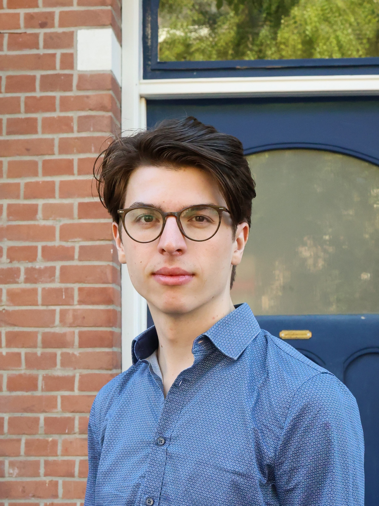

Hello and welcome to my website!

I am a PhD student in the Theory of Computation Group at the University of Birmingham. I started my PhD in autumn of 2024 and I am being supervised by Sonia Marin, Anupam Das and Todd Waugh Ambrose. My research is in proof theory of modal logic, more specifically I am interested in how modal provability logic and intuitionistic modalities can be handled proof-theoretically. Beyond that, I am also interested in effective proof translations, deep inference and universal proof theory.
Before my doctoral studies, I obtained a Master of Logic degree at the Institute for Logic Language and Computation in Amsterdam. There, I wrote my thesis under the supervision of Marianna Girrlando on proof translations for intuitionistic modal logic.
I started my journey in logic during my bachelor's in philosophy and physics at Ruhr-University Bochum. There, I have written my thesis on modal realism and discussed implications of modal realism under the supervision of Heinrich Wansing.